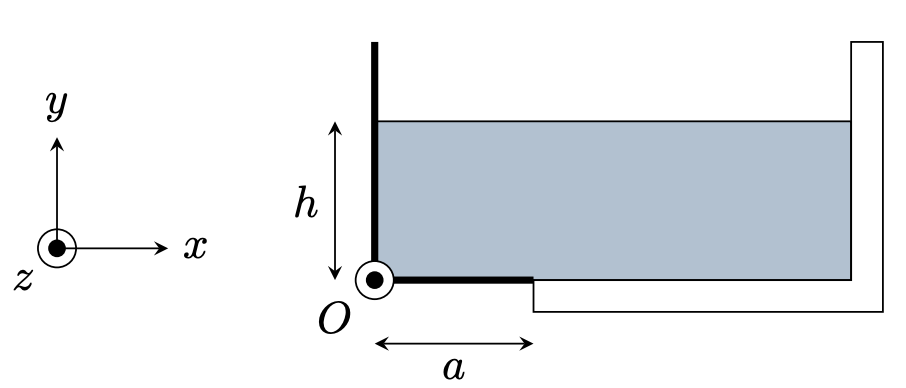

PrepOral
[PC] [Maison]
Basculement d'une plaque
Enoncé
Les deux parois du récipient ci-dessous dessinées en traits épais sont rigidement liées et peuvent pivoter sans frottement autour de l’axe ($Oz$). Le récipient est parallélépipédique et possède une longueur b dans la direction ($Oz$). On note $P_0$ la pression dans l’air environnant et $\vec{g}=-g\vec{e_y}$.

Q. À quelle condition sur la hauteur d’eau y a-t-il basculement ?
Commentaires
Encore jamais posé !
Corrigé
On a : $P(y)=P_0 + \rho g (h-y)$. On calcule les forces de pressions exercées sur chacune des parois, puis leurs moments. $$M_tot=\rho g b (h^3/6-ha^2/2)$$ On a ensuite la réaction normale qui possède un moment non nul, la condition de basculement est $N \lt 0$. La condition est : $$h>a\sqrt{3}$$